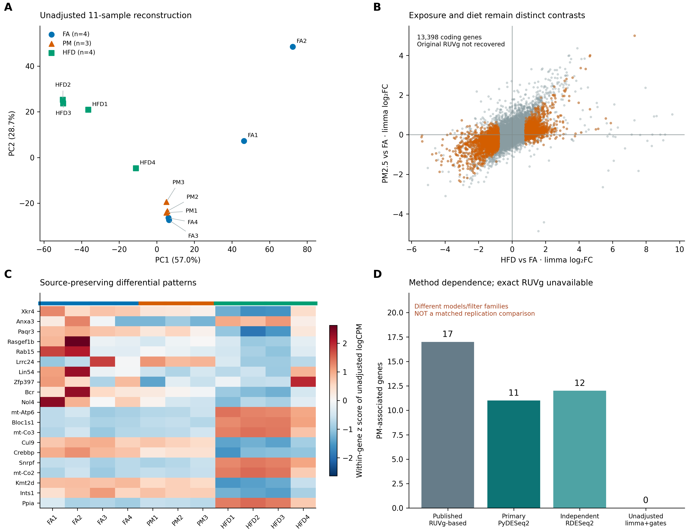
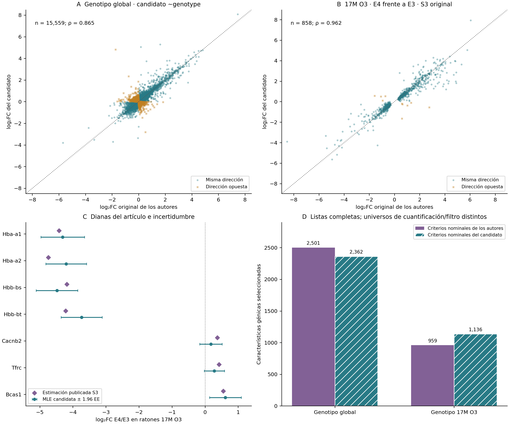
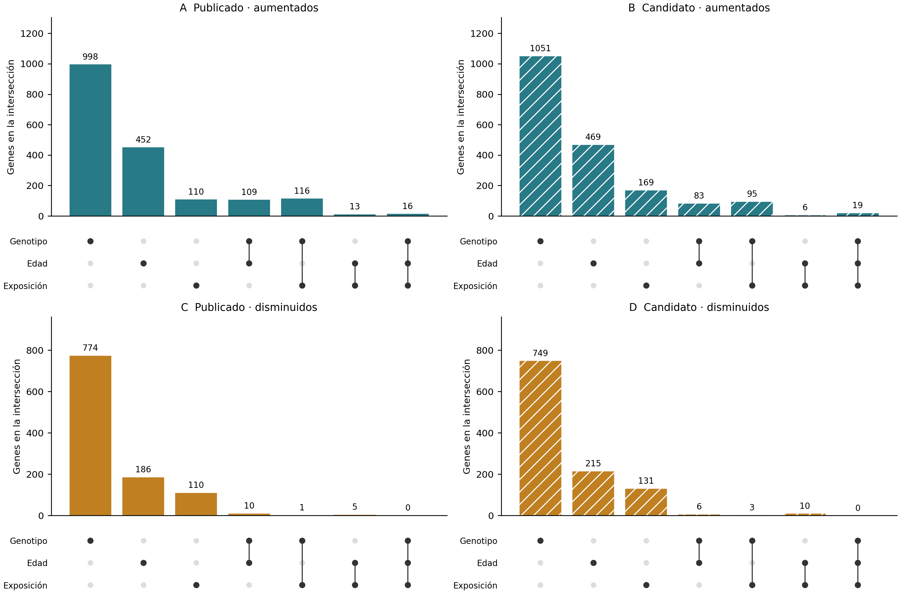

| Contraste original frente a control | Genes | Hallazgos FDR originales y reproducidos | Aumentados | Disminuidos |
|---|---|---|---|---|
| PFF | 21388 | 109 | 58 | 51 |
| PM | 21388 | 1205 | 688 | 517 |
| PMPFF | 21388 | 1222 | 659 | 563 |
| PMPFFPM | 21388 | 639 | 330 | 309 |
![Reproducción basada en conteos del modelo cortical original de cinco condiciones (20 animales; cuatro por condición). A: PCA de TMM logCPM con los 500 genes más variables, escalados a varianza unitaria como en el código depositado. B–D: conteos de descubrimientos y efectos de máxima verosimilitud originales y recalculados. Las líneas naranjas indican identidad; el color hexagonal representa la densidad génica en escala logarítmica. E–F: sensibilidad al usar solo los ocho animales PM/PBS. La contingencia incluye genes con valores ajustados finitos en ambos modelos; las tablas completas conservan los valores ausentes. Es reproducción computacional, no replicación biológica independiente. Texto interno de la figura conservado en inglés.](../assets/figures/replication_pm/cortex_replication_benchmark.svg)
Código original, listas publicadas, contrastes equivalentes y métodos pendientes
Se compara el reanálisis con el código de los autores, los resultados numéricos depositados y las tablas suplementarias, utilizando los mismos animales de origen. La reproducción computacional comprueba si se recupera el análisis comunicado; no agrega réplicas biológicas ni valida independientemente un mecanismo. Coincidir en el número de genes es insuficiente: se comparan identidades, efectos, valores p, reglas de selección y poblaciones analíticas.
| Estudio | Evidencia original | Resultado |
|---|---|---|
| Corteza, GSE297423 | Código, conteos y cuatro tablas DE de Zenodo | Se recuperan exactamente los conjuntos de genes significativos |
| Hipotálamo, GSE145840 | Métodos y suplemento de JCI | Sensibilidad metodológica parcial; falta la especificación de RUVg |
| miRNA hipocampal, GSE93967 | Diana de Figura 6 y microarreglos | Concuerdan dirección y evidencia nominal de dosis alta; no confirmación por FDR |
| Hipocampo y ozono, E-MTAB-14917 | CSV de genotipo y suplementos S2/S3 | Selección original exacta y concordancia parcial entre métodos |
Estas capas complementan los análisis principales, cuyos modelos y umbrales se conservan.
El depósito original de Zenodo de Zhang et al. contiene código y resultados del estudio de Science. La matriz de conteos coincide exactamente con GEO tras emparejar identificadores y bibliotecas. Se reproducen 20 muestras de cinco grupos, incluidos los brazos con PFF, mediante el diseño original ~group. Zhang et al. (2025)
El código conserva genes con al menos diez conteos en cuatro muestras, con 21,388 genes retenidos. El comportamiento original de results() de DESeq2 utiliza alpha = 0.1 para filtrado independiente y después selecciona p ajustado < 0.05. Esa distinción es necesaria para reproducir el resultado.
| Contraste original frente a control | Genes | Hallazgos FDR originales y reproducidos | Aumentados | Disminuidos |
|---|---|---|---|---|
| PFF | 21388 | 109 | 58 | 51 |
| PM | 21388 | 1205 | 688 | 517 |
| PMPFF | 21388 | 1222 | 659 | 563 |
| PMPFFPM | 21388 | 639 | 330 | 309 |
Se recuperan 109, 1,205, 1,222 y 639 genes, con cero genes significativos discordantes en los cuatro contrastes. La mayor diferencia absoluta entre MLE log₂FC es aproximadamente 8.12 × 10⁻⁵ y entre valores p nominales es 1.94 × 10⁻⁶. Todos los ajustes convergen. La igualdad corresponde a la inferencia desde los conteos depositados; no implica reconstruir independientemente el alineamiento ni todas las figuras.
El PCA del código original utiliza 500 genes de mayor varianza en TMM log₂CPM, con escalado de la varianza génica. Recupera PC1 = 29.2014% y PC2 = 9.7606%, concordantes con 29.2% y 9.8% publicados. El manuscrito menciona una función de filtrado preliminar distinta; se sigue el código depositado y se documenta la discrepancia.
![A: unión de los ocho genes con menor FDR de los autores en cada condición. Los colores muestran efectos log2 recalculados y regularizados con apeglm; los puntos negros indican FDR de BH de Wald original <0.05. Los genes ligados al cromosoma Y tienen MLE grandes y efectos regularizados próximos a cero; consulte el diagnóstico de marcadores antes de interpretar mecanismos. B: intersecciones exactas de los conjuntos reproducidos, con 582 genes exclusivos de PM y 323 exclusivos del par PM/PM–PFF. C: ocho genes de menor FDR de los autores en el núcleo de enriquecimiento depositado de GO:0002443 (inmunidad mediada por leucocitos). Los intervalos puntuales corresponden a MLE ±1.96 EE del modelo original y no ajustan por selección de genes. Todos los contrastes comparten cuatro animales PBS. La pertenencia a GO se verificó en la tabla de los autores; el enriquecimiento no se recalculó independientemente. Texto interno de la figura conservado en inglés.](../assets/figures/replication_pm/cortex_multicondition_signature.svg)
Reproducir el ajuste no demuestra un mecanismo de exposición. Los primeros genes incluyen Ddx3y, Uty y Kdm5d, ligados al cromosoma Y. Los cuatro controles PBS tienen conteo cero para estos genes, mientras otros grupos de tratamiento contienen conteos heterogéneos. Esto plantea una posible diferencia en composición por sexo o identidad muestral. Los metadatos disponibles no establecen el sexo, y el modelo original no lo ajusta. Se conserva el resultado numérico junto con esta incertidumbre; no se asigna sexo a partir de tres genes ni se atribuyen todos los cambios a PM2.5.
![Conteos originales observados de Ddx3y, Uty, Kdm5d y Xist en todos los animales de corteza. A: expresión normalizada con etiquetas de condición; no se omiten animales. B: Xist frente a la suma de tres marcadores ligados al cromosoma Y, sin clasificación ni prueba de efecto de exposición. Los cuatro animales PBS tienen cero conteos originales en cada marcador Y; las otras condiciones muestran heterogeneidad. Estos genes están entre los primeros de las tablas FDR de Wald originales, pero apeglm regulariza sus efectos hacia cero. Es una señal diagnóstica para verificar sexo, identidad y explicaciones técnicas con metadatos independientes. La figura por sí sola no permite asignar sexo ni demostrar confusión. Se conserva el modelo original ajustado solo por grupo. Texto interno de la figura conservado en inglés.](../assets/figures/replication_pm/cortex_marker_qc.svg)
Conteos de marcadores por animal
Los 1,205 genes reproducidos difieren de los 1,167 del contraste principal de ocho muestras porque cambian población analítica, dispersiones, filtrado e implementación. No son resultados intercambiables.
Rajagopalan et al. describen normalización por carril, genes de control empíricos y RUVg antes del análisis limma/edgeR. No se dispone de las identidades exactas de los 5,000 controles ni del número de factores no deseados. La descripción de la selección de controles también es ambigua. Esos parámetros no se deducen de forma única de los conteos. Rajagopalan et al. (2020)
La sensibilidad transparente incluye 11 bibliotecas FA/PM/HFD y 50,417 características comunes. Se excluyen 91 filas exclusivas de HFD, sin inventar ceros. La anotación codificante GENCODE M13 y un filtro CPM explícito retienen 13,398 genes. El modelo TMM/voom sin RUVg identifica cero genes PM y 3,600 HFD con los criterios reconstruidos de abundancia, |log₂FC| > 0.8 y BH < 0.05. El diagrama suplementario de hipotálamo implica 17 genes PM y 761 HFD.

2 en al menos tres muestras, TMM/voom y pruebas moderadas de limma. El umbral declarado es FDR de BH <0.05, |log2FC| >0.8 y AveExpr >1. A: PCA de 500 genes logCPM variables sin ajuste, centrados sin escalar. B: dieta y exposición son contrastes separados; naranja indica superar los umbrales en cualquiera. C: unión de diez genes de menor FDR por contraste; los valores z por fila describen patrones. D: los 17 genes PM publicados, 11 de PyDESeq2 principal, 12 de DESeq2 en R y 0 de limma sin RUVg usan modelos y universos distintos. Estas diferencias no demuestran falta de replicación biológica ni validan el ajuste original no disponible. Texto interno de la figura conservado en inglés." class="figure-img">Es sensibilidad metodológica parcial, no reproducción exacta. Se documentan las diferencias entre umbrales de abundancia del artículo y suplemento y un aparente error de tejido en una leyenda. El análisis principal de siete animales con 11 hallazgos BH no cambia. Para una reproducción más completa se necesitan los controles RUVg, el número de factores y el análisis ejecutable original.
La Figura 6 de Ku et al. destaca miR-574-5p. En los nueve microarreglos su señal disminuye con ambas dosis. A 5 mg/kg, la diferencia es −0.26945 unidades de señal originales. La comparación LSD no moderada da p nominal = 0.0368, y el análisis principal limma da p = 0.0253, pero q BH = 0.312. Ku et al. (2017)
![Auditoría del microarreglo en cuatro paneles. A: los nueve animales de origen para miR-574-5p; las marcas negras indican media ± EE. B: diferencias de señal con intervalos puntuales del 95% de limma y LSD no moderada. C: hallazgos nominales y con ajuste BH entre 1.245 características fijas; ajuste separado de cada contraste. D: nuevo mapa descriptivo de control/dosis alta con las 20 características de mayor varianza más la diana original, puntuaciones z por fila y orden jerárquico (enlace promedio, distancia euclídea); C1–C3 = control, H1–H3 = dosis alta. No se describe la selección de filas de la Figura 6a original. qPCR y experimentos funcionales son ensayos separados.](../assets/figures/replication_mirna_ozone/mirna_author_reproduction_es.svg)
El ANOVA global no moderado da p = 0.0788: una LSD protegida que requiera significación global no continuaría. El artículo describe ANOVA/LSD de forma general sin especificar la condición para los microarreglos, la selección de características ni la configuración completa de GeneSpring. Se presentan las alternativas explícitamente. El mapa descriptivo nuevo utiliza una regla documentada y no pretende recuperar las filas desconocidas de la Figura 6 original.
La dirección y la evidencia nominal de dosis alta concuerdan con la afirmación del microarreglo, mientras que la FDR del conjunto no confirma esa diana. Estos datos no reproducen los ensayos separados de qPCR, BACE1, ChIP, rescate, proteínas o conducta; por sí solos no establecen ni refutan esos mecanismos.
El CSV E4 frente a E3 depositado es una tabla de resultados de genotipo, no una matriz de conteos de exposición. La regla original p nominal < 0.05 y |log₂FC| > 0.3 recupera exactamente 1,490 genes aumentados y 1,011 disminuidos, coincidentes con S2. Otras comparaciones utilizan |log₂FC| > 0.1; se respeta el umbral de cada contraste. Nakamya et al. (2025)
La nueva cuantificación desde lecturas usa Salmon/tximport frente a HISAT2/featureCounts original. Los modelos candidatos conservan el filtro de 18,537 genes y los factores de longitud efectiva, pero reestiman dispersiones por diseño/subconjunto. Se restaura el reemplazo predeterminado de valores atípicos de DESeq2 en grupos suficientemente replicados para estos candidatos, separado del modelo factorial principal.

0,3; subgrupo de 17 meses bajo O3: p < 0,05 y |log2FC| > 0,1. Salmon difiere del flujo HISAT2/featureCounts original. Se comparan los mismos animales, no una cohorte independiente." class="figure-img">En el candidato de genotipo agrupado, 15,559 efectos finitos comunes tienen ρ de Spearman = 0.865. Selecciona 2,362 genes nominales frente a 2,501 originales. En el universo analizable común se solapan 1,527 genes seleccionados, con Jaccard aproximado 0.612.
Para E4 frente a E3 a 17 meses bajo ozono, 858 de 959 genes publicados en S3 tienen estimaciones finitas y símbolo exacto. La correlación de efectos es 0.962, con 98.8% de concordancia direccional; 543 mantienen la selección nominal candidata y 71 mantienen BH < 0.05. Esta correlación está condicionada a la lista seleccionada por los autores y a los mismos animales; no es una estimación independiente ni imparcial de todo el transcriptoma.
Los cuatro genes de hemoglobina destacados conservan efectos E4/E3 negativos y significación BH. Otras dianas conservan dirección sin igual soporte estadístico. La expresión de hemoglobina en tejido completo no distingue función de barrera hematoencefálica, material vascular residual, composición celular y regulación sin mediciones adicionales.

0,3; exposición: p < 0,05 y |log2FC| > 0,1. Estas pertenencias correlacionadas no son pruebas de interacción ni evidencias de toxicidad relativa." class="figure-img">El diagrama UpSet compara intersecciones de listas de edad, genotipo y exposición en un universo común de símbolos exactos. El solapamiento es descriptivo y no prueba interacción. Los análisis formales de interacción responden esa pregunta separada.
El resultado más fuerte es la recuperación exacta de los conjuntos de corteza, junto a una señal de calidad no resuelta del cromosoma Y. En hipotálamo faltan parámetros RUVg. En miRNA concuerdan dirección y evidencia nominal de dosis alta con comparación no protegida, pero la multiplicidad y la condición global modifican la conclusión. En ozono existe concordancia considerable entre cuantificadores sin reproducir cada elección histórica de filtrado, anotación, diseño y software.
Auditoría de afirmaciones PM · Métricas génicas de corteza · Auditoría miRNA y ozono · Estadísticas de dianas miRNA · Efectos de genotipo emparejados · Efectos S3 emparejados
Se conservan URL, hashes, universos, sesiones de software y limitaciones. Las copias de lectura de los artículos permanecen en la biblioteca local; el informe público enlaza las publicaciones originales.
![2 en al menos tres muestras, TMM/voom y pruebas moderadas de limma. El umbral declarado es FDR de BH <0.05, |log2FC| >0.8 y AveExpr >1. A: PCA de 500 genes logCPM variables sin ajuste, centrados sin escalar. B: dieta y exposición son contrastes separados; naranja indica superar los umbrales en cualquiera. C: unión de diez genes de menor FDR por contraste; los valores z por fila describen patrones. D: los 17 genes PM publicados, 11 de PyDESeq2 principal, 12 de DESeq2 en R y 0 de limma sin RUVg usan modelos y universos distintos. Estas diferencias no demuestran falta de replicación biológica ni validan el ajuste original no disponible. Texto interno de la figura conservado en inglés." class="figure-img">](../assets/figures/replication_pm/hypothalamus_method_sensitivity.svg){kind=link}